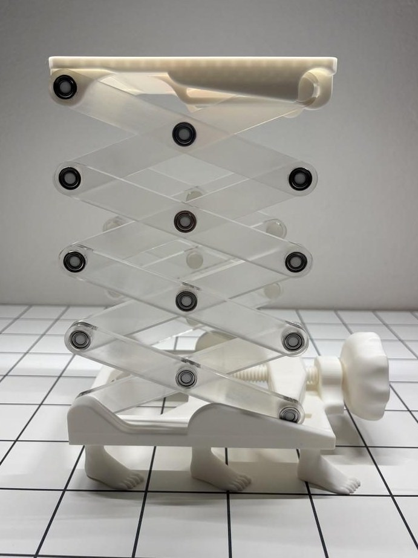
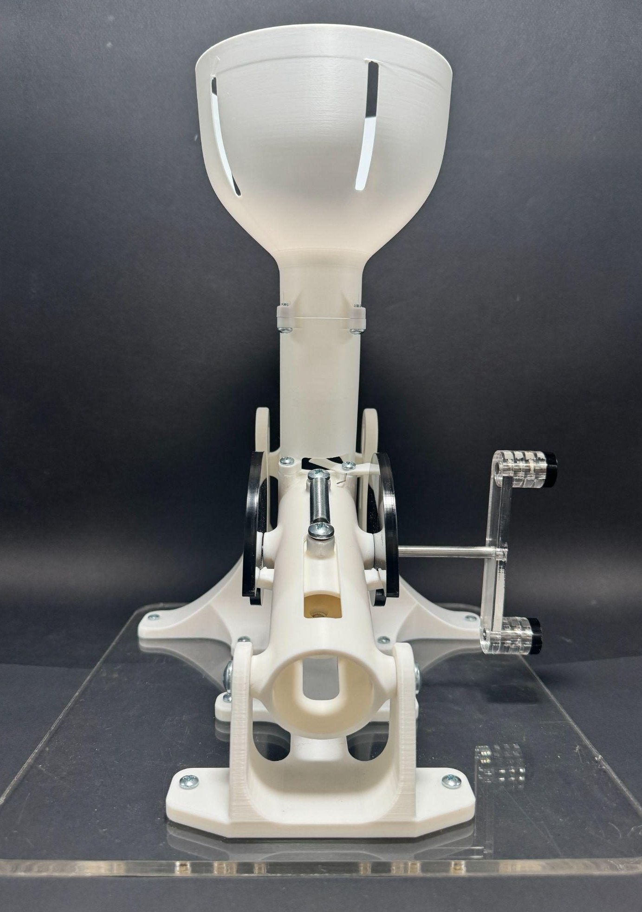

Coursework · ME 102 & ME 103
Product Realization Lab
Before the lab and the club teams, ME 102 and ME 103 taught me to take an idea from sketch to a fabricated, working prototype — built with casting, machining, laser cutting, and 3D printing.
ME 103 · Spring 2026
Chen Family Wind Chime
Bronze-cast and lathe-turned, made for my grandmother's new home.
View project →
ME 102 · Project 1
Container
A laser-cut hexagonal container built entirely from friction-fit joints.
View project →
ME 102 · Project 2
Athlete Assist
A lead-screw-actuated scissor lift reaching 12 inches of extension.
View project →
ME 102 · Project 3
Ping Pong Ball Launcher
A cam-actuated, spring-driven launcher, iterated through five prototypes.
View project →